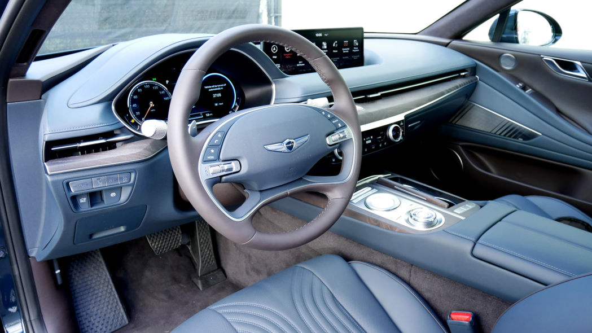
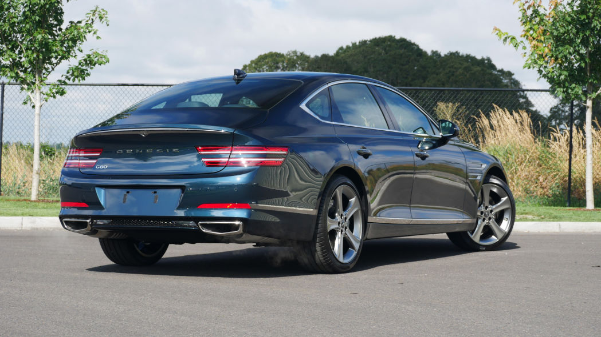

Genesis G80
Posted By: Admin On February 30th, 2020.

Luxury sedans certainly aren't what they used to be in the automotive pantheon, largely supplanted in the buying public's eyes by SUVs. However, a sleek and elegant sedan can still turn heads, and with the 2021 Genesis G80, we think that some swiveling is bound to occur. Though its shape is certainly evocative of the Audi A7, that's not really a bad thing, and there are more than enough unique details to make it something other than a copycat. It's also the first G80 you can't describe as bland, as it presents more reasons than just a low price and long warranty for folks to consider it instead of established segments entries like the Audi A6, BMW 5 Series and Mercedes E-Class.
That's particularly the case inside, where Genesis has really stepped things up in terms of quality, technology and a unique design that should definitely stand out during back-to-back test drives of various luxury sedans. It looks and feels special inside. The huge, standard 14.5-inch touchscreen with iPod-like secondary controller stands out in particular for being feature-rich and user-friendly, which is a rarity in luxury cars. There's also tons of space in the comfy back seat, which is a big part of buying a big luxury sedan like the G80.
How it drives is obviously a big part, but to this point, we've only taken a glorified trip around the block in it. The suspension feels as sophisticated behind the wheel as it looks when taking a peek behind the wheels, and the engine specs suggest plenty of oomph, but we'll have to reserve full judgment for later. Still, our brief taste suggests a sedan that should definitely be taken seriously.